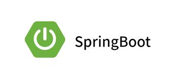

¿Quien soy yo?

Mi nombre es Jefte Manuel Beltrán Pineda, y soy un apasionado estudiante
y programador Jr. con un firme compromiso hacia el mundo del desarrollo de
software.
Mi enfoque principal secentra en el Back-End, y me enorgullece decir que
cuento con experiencia en una variedad de tecnologías que me permiten
construir soluciones sólidas y eficientes.
Mis habilidades en base de datos abarcan sistemas como MySQL, SQL Server,
PostgreSQL y Oracle, lo que me permite diseñar y gestionar bases de datos
robustas y escalables. En cuanto a los lenguajes de programación, domino
Java,Python y JavaScript, lo que me permite abordar una amplia gama de
proyectos y desafíos.
Mi enfoque hacia el aprendizaje continuo es una parte fundamental de mi
personalidad. Siempre estoy buscando oportunidades para ampliar mis
conocimientos y mantenerme al día con las últimas tendencias en tecnología.
Esto no solo me ayuda a mantenerme competitivo en el campo de la
programación, sino que también me permite contribuir de manera efectiva
en equipos de desarrollo.
Hábilidades técnicas

SQL Server
Ver las habilidades:

Java
Ver las habilidades:

PostgreSQL
Ver las habilidades:

MySQL
Ver las habilidades:

Python
Ver las habilidades:

SpringBoot
Ver las habilidades:

Github
Ver las habilidades:
Zoom
Ver las habilidades:

Office
Ver las habilidades:
Windows
Ver las habilidades: